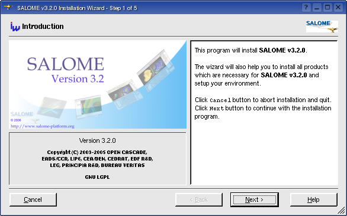
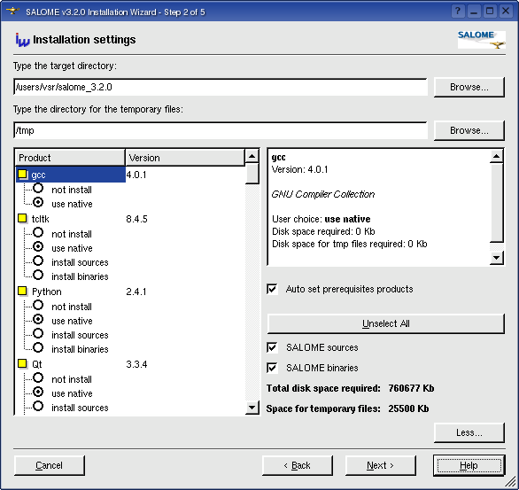
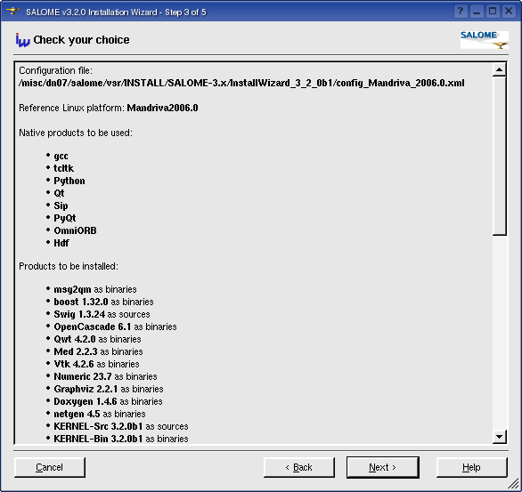
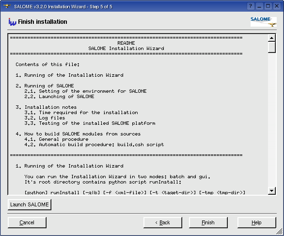

Please, take into account
that the displayed amount of required disk space is approximate and may
differ when you install products on your hard drive.
Please, take into account
that the displayed amount of required disk space is approximate and may
differ when you install products on your hard drive. The Installation Wizard can be launched in two modes: GUI and batch.
The root directory of the Installation Wizard contains python script runInstall. To run the Installation
Wizard just type runInstall in terminal window:
[ python ] runInstall [<options>]. Each option has short and long notation:
|
-g / --gui |
Runs the Installation Wizard in the GUI mode (default option). In this case only <xml-file> key is taken into account. Other parameters are ignored. |
|
-b / --batch |
Runs the Installation Wizard in command-line mode. |
|
-f <FILE> / --file=<FILE> |
The configuration file to be used by the Installation Wizard. If this parameter is not used then the installation script tries to define the Linux version and use the corresponding xml file. For example, config_Mandrake10_1.xml file is to be used for Linux Mandrake 10.1. If the appropriate file is not found, the file config.xml will be used. This file refers to the basic target platform which is Linux Mandrake 10.1 for SALOME 3.0 and higher. If config.xml file is also not found, the warning message box is shown (in GUI mode) or printed to the console (in batch mode) and the Installation Wizard quits. |
|
-d <DIR> / --target=<DIR> |
The target directory for SALOME platform to be installed to. If used, this option overrides the default target directory, defined in the configuration XML file (usually ${HOME}/salome_<version>). |
|
-t <DIR> / --tmp=<DIR> |
The directory, which is used for temporary files. If used, this option overrides the default temporary directory, given in the configuration xml file (usually /tmp, see here). |
|
-h / --help |
Prints help information about available options. |
|
-v / --version |
Prints version information (Note: this is the Installation Wizard's version number, not of SALOME platform). |
To run the Installation Wizard in the GUI mode, just type runInstall.
The installation procedure can support some different Linux platforms
and various number of products. As it was mentioned above the basic target
platform for SALOME 3.0.0 and higher is Linux Mandrake 10.1.
The using of configuration xml files gives flexible way to modify the list of products to be installed by the Installation Wizard without changing program's source code. Just create your own configuration file and implement installation scripts for products you want to be provided by Wizard. See modifying XML configuration file and implementing installation scripts for the new products for more information.
The Installation Wizard was built with using of the Trolltech's Qt 3.0.5 library. The program contains several pages. To navigate between pages use "Next" and "Back" buttons in the lower part of the wizard window. "Cancel" button closes dialog window and quits the installation procedure. To invoke this help information click "Help" button.
Skip the first "Introduction" page by pressing "Next" button:

Figure 1: "Introduction" page
In the second page you are proposed to enter the target directory where
all selected products should be installed to. You can also press the "Browse..."
button and choose the folder for installation using standard Qt's
browse directory dialog box.
If the directory you want to install products to does not exist you will
be prompted to confirm the directory creation. If you type a wrong directory
path, or if you have no permission for the directory you use, the corresponding
message box will appear.
The Installation Wizard has two modes of the installation: basic (default) and advanced. In the basic mode it is necessary just to enter the target directory. If you want to use the advanced mode, click the "More..." button.
In the advanced mode you have the possibility to select products to
be installed (see Fig.2 ). Each product can
have several options of installation: you have a possibility to use native
products, install already precompiled binaries, build product from the
sources or not install it at all. Possible options and default choice
are provided by the configuration file. You can mark the products you
want to install by clicking the corresponding radio buttons in the list
view in the left part of the page. Note that some products can be installed
only together with other products (or these prerequisite products should
be already installed on your computer). The installation procedure has
a special feature to automatically mark these products in the list view.
For example, in order to install PyQt it is necessary to
have gcc, Python, Qt and Sip
installed. Therefore all these products will be marked when you check
PyQt. This feature can be switched off by clicking the "Auto
set prerequisites products" checkbox.
Special button in the right part of the page - "Unselect All"
- allows to quickly reset all products to the "not install"
state.
If you want to use native products (like gcc,
tcl, etc.), select the "use
native" option.
There are also two checkboxes on this page: "SALOME sources" and "SALOME binaries". These three-state checkboxes allow quick selecting/unselecting SALOME packages for the installation.
The box in the right part of the page displays the information about currently highlighted product: name, version, short description (if provided in XML file), required disk space, disk space required for temporary files, list of prerequisites and current user choice.

Figure 2: "Installation settings" page in the advanced mode
The "Total disk space required:" field displays how much disk space on the hard drive is required for installation of selected products.
Please, take into account
that the displayed amount of required disk space is approximate and may
differ when you install products on your hard drive.
The installation procedure uses a special directory to store temporary files. The "Space for temporary files:" field shows the information about required disk space on the hard drive for extracting and compiling of the selected products. You can change the default directory - just type path to the folder you want to use or click on the corresponding "Browse..." button.
In fact, temporary files
are not stored in the directory entered by user. The Installation Wizard
creates in this directory an additional folder named something like INSTALLWORKXXXXX where XXXXX is a unique number.
This allows to launch several Installation Wizards simultaneously. This
temporary directory is removed automatically when the installation finishes.
The installation procedure also checks the available disk space in the selected directories according to the products selected. If there is not enough disk space on your hard drive you will see the corresponding error message box.
Unfortunately, the configure
procedure has a very annoying bug under Linux platform. The directory
should be obligatory entered without spaces. For example, the configure
procedure for gcc won't work if you pass the following parameter:
--prefix="/New Folder 1". Therefore you are strongly
recommended not to use directory names containing spaces.
To proceed further click the "Next" button. At this moment the program will make some tests to check installation settings: whether there is enough disk space on the hard drive, whether native products are preinstalled, and the dependencies (prerequisites) for each product you have selected to be installed. If any test fails you will see the corresponding warning message box. Otherwise the wizard will follow to the next page:

Figure 3: "Check your choice" page
This page summarizes the installation settings you've made on the previous pages. You can check again your choice to change it if necessary.
When you are sure that everything is OK, press the "Next" button to follow to the next page.

Figure 4: "Installation progress" page
To start installation of the selected products click "Start" button. It launches the shell installation script and you will be able to see the output of the script in the dialog's topmost frame. In case of any installation problems (for example, you have accidentally removed the temporary directory) the script will ask you: "Would you like to continue : (Y,N) ?". You can answer this question by typing [Y] or [N] in the middle text edit control frame.
 press [Enter] when you finish
typing data.
press [Enter] when you finish
typing data.
The "Installation Status" frame window shows you the progress of installation. It contains a list of all selected products with brief descriptions. "Waiting" description means that installation of this product have not started yet. Currently the product being installed is marked as "Processing". All installed products have "Completed" description.
You can abort installation and close the installation procedure using the "Cancel" button. It sends the signal "SIGTERM" to the shell script. The script has a signal handler and will try to clear all temporary files. The process of removing temporary files can take some time, so the installation wizard will wait 3 seconds before closing.
At the end of installation (when all selected products have been installed successfully) you can go back to the previous pages to start a new installation or click the "Next" button to go the Readme page:

Figure 5: "Finish installation" page
In this page you can read some important information about the Instalation
Wizard itself and some hints: how to run and test SALOME or how to build
SALOME from the sources. This is the content of the README file which
you can find in the root directory of the Installation Wizard.
You can also launch SALOME Desktop from this page by clicking the "Launch
SALOME" button.
During the process of installation the script creates some environment files to simplify the procedure of launching SALOME. These shell scripts set all necessary environment variables for all products you have installed. To learn how installation scripts collect the environment, see here.
These files are: salome.csh + salome.sh in the KERNEL module sources and KERNEL module binaries root directories and env_products.csh + env_products.sh in the target directory.
salome.(c)sh and env_products.(c)sh
files are slightly different: env_products.* files are optimized to
be used for the building of SALOME modules from the sources (see README file provided with the installation
procedure on the CD). The salome.* files are optimized for the SALOME
launching. This difference is defined by the environment variable ENV_FOR_LAUNCH which is set
to 0 in env_products.* files and to 1 in salome.* files.
Unfortunately under Linux platform there is no exact algorithm to identify the product's version. The table below gives an idea how the version is checked for the preinstalled products for the Linux Mandrake 10.1 platform.
|
Product |
Algorithm of checking |
Preliminary steps before launching |
Notes |
|---|---|---|---|
| gcc 3.4.1 | ver=`gcc -dumpversion` |
- |
It is recommended to use the native gcc for Mandrake 10.1. |
| tcl 8.4.5 | 1)
check if TCLHOME variable is set 2) existence of tclsh8.4 3) existence of wish8.4 4) existence of libtcl8.4.so 5) existence of libtk8.4.so |
set TCLHOME
if you have a preinstalled version of tcl. add a directory where libraries can be found to the LD_LIBRARY_PATH |
Unfortunately there is no strict
way to check the tcl version number. It is recommended to use the native tcl/tk for Mandrake 10.1. |
| boost 1.31.0 | 1) check if BOOSTDIR variable is set. 2) ver=`egrep 'BOOST_VERSION [0-9]+' ${BOOSTDIR}/boost/version.hpp | sed 's/.*BOOST_VERSION \([0-9]\+\)/\1/g'` |
set BOOSTDIR if you have a preinstalled version of boost | we use file version.hpp in the boost distribution to get
the version information. ver should be equal to 103100. |
| Open CASCADE
Technology 6.1 |
1)
check if CASROOT variable is set 2) ver_major=`grep "!define OCC_VERSION_MAJOR" ${CASROOT}/inc/Standard_Version.hxx | awk '{print $3}'` 3) ver_minor=`grep "!define OCC_VERSION_MINOR" ${CASROOT}/inc/Standard_Version.hxx | awk '{print $3}'` 4) ver="$ver_major.$ver_minor" 5) Check the existence of libStdPlugin.so in OpenCASCADE distribution, |
set CASROOT if you have a preinstalled version of Open CASCADE | Open CASCADE's Standard_Version.hxx
file provides the version information. ver should be equal to 6.1. |
| Python 2.3.4 | 1)
PYTHONHOME variable should be
set 2) isPython=`which python` 3) ver=`python -V` |
set PYTHONHOME
to root Python distribution folder; add the directory where python can be found to the PATH variable |
Python should exist and ver
should be equal to 2.3.4 It is recommended to use the native Python for Mandrake 10.1. |
| Swig 1.3.24 | ver=`swig -version 2>&1 | grep -i version | awk '{ print $3 }' | sed -e 's/^\([0-9.]*\)\(.*\)/\1/'` | add the directory where swig binary can be found to the PATH variable | Swig should exist and ver should be equal to 1.3.24. |
| Qt 3.3.3 | 1)
QTDIR variable should be set. 2) ver=`grep "QT_VERSION_STR" ${QTDIR}/include/qglobal.h | sed -e 's%^#define QT_VERSION_STR\([[:space:]]*\)%%g' -e 's%\"%%g'` |
set QTDIR if you have a preinstalled version of qt | Qt's qglobal.h file provides version
information: ver should be equal
to 3.3.3. It is recommended to use the native Qt for Mandrake 10.1. |
| msg2qm (Qt 3.3.3 compatible) | MSG2QM_ROOT variable should be set. | set MSG2QM_ROOT if you have preinstalled version of msg2qm tool | msg2qm is a Qt tool used to convert
text *.po files to *.qm resource files. Unfortunately this tool is not
included in the Qt distribution and is provided only in its sources package.
We distribute this tool with the Installation Wizard. In addition there is no way to check the version number of msg2qm tool. |
| Qwt 4.2.0/0.2.4 | 1)
QWTHOME variable should be set. 2) check if libqwt.so.4.2.0 exists |
set QWTHOME if you have a preinstalled version of qwt | Unfortunately there is no strict
way to check the qwt version number. We try to find libqwt.so.4.2.0 in the ${QWTHOME}/lib folder. |
| Hdf 51.6.3 | 1)
HDF5HOME variable should be set. 2) existence of libhdf5.so.0.0.0 3) existence of libhdf5.settings 4) ver=`grep "HDF5 Version:" ${HDF5HOME}/lib/libhdf5.settings | awk '{print $3}'` |
set HDF5HOME if you have a preinstalled version of hdf | We try to find libhdf5.so.0.0.0 and
libhdf5.settings in ${HDF5HOME}/lib
folder. File libhdf5.settings contains the following version information: HDF5 Version: 1.6.3 |
| Med 2.2.3 | 1)
MED2HOME variable should be set. 2) existence of libmed.so.1.0.1 |
set MED2HOME if you have a preinstalled version of med | Unfortunately there is no strict
way to check the med version number. We try to find libmed.so.1.0.1 in ${MED2HOME}/lib folder. If you have a problem with the preinstalled version of med, please, reinstall it. |
| Vtk 4.2.6 | 1)
VTKHOME variable should be set. 2) existence of libvtkCommon.so |
set VTKHOME if you have a preinstalled version of vtk | Unfortunately there is no strict
way to check the VTK version number. We try to find libvtkCommon.so in ${VTKHOME}/lib/vtk folder. If you have a problem with the preinstalled version of vtk, please, reinstall it. |
| Netgen 4.5 | NETGENROOT variable should be set. | set NETGENROOT if you have a preinstalled version of Netgen. | Unfortunately we can't find anything about NETGEN version. We just check if the NETGENROOT environment variable is set. The NETGEN version should be patched. |
| OmniORB 4.0.5, OmniORBpy 2.5, OmniNotify 2.1 |
1)
OMNIORBDIR variable should be set. 2) existence of libomniORB4.so.0.5 3) existence of _omnipymodule.so.2.5 4) existence of libCOSNotify4.so.0.1 5) existence of notifd |
set OMNIORBDIR if you have a preinstalled version of omni | We try to find several omni libraries and binaries in the ${OMNIORBDIR}/lib and ${OMNIORBDIR}/bin directories. |
| Numeric 23.7 | ver=`python -c 'import Numeric; print Numeric.__version__' 2>/dev/null` | add the directory where you have the preinstalled version of Numeric package to your PYTHONHOME variable | If you have problem with the preinstalled version of Numeric 23.7, please, reinstall it. |
| Sip 4.1 | 1)
SIPDIR variable should be set. 2) ver=`${SIPDIR}/sip -V | awk '{print $1}'` |
set SIPDIR to the directory where you have sip preinstalled | ver should be equal to 4.1. |
| PyQt 3.13 | 1)
PYQTDIR variable should be set. 2) existence of qt.so library |
set PYQTDIR to the directory where you have PyQt preinstalled | Unfortunately we can't exactly check
the PyQt version number. We just try to find qt.so in ${PYQTDIR}. Note that PyQt officially doesn't support Qt 3.3.3, but nevertheless it can be used. |
| Doxygen 1.4.6 | 1)
existence of doxygen 2) existence of doxytag 3) existence of doxywizard 4) ver=`doxygen --version` |
add the directory where you have doxygen binaries preinstalled to the PATH variable. | doxygen, doxytag, doxywizard binaries
should exist; ver should be equal
to 1.4.6. If you have problems with the preinstalled version of doxygen, reinstall it. It is recommended to use the native doxygen for Mandrake 10.1. |
| Graphviz 2.2.1 | 1)
existence of dot binary. 2) ver=`dot -V 2>&1 | awk '{print $3}'` |
add the graphviz bin directory to the PATH environment variable | We try to find dot program in the
${PATH}. ver should be equal to 2.2.1. |
| MODULE
binaries (where MODULE = KERNEL, GUI, GEOM, ...) |
1)
MODULE_ROOT_DIR variable should be set 2) existence of VERSION file 3) ver=`cat ${MODULE_ROOT_DIR}/bin/salome/VERSION | awk -F: '{print $NF}' | tr -d '[:space:]'` |
set MODULE_ROOT_DIR if you have preinstalled binaries of MODULE version 3.2.0. | MODULE binaries should exist and ver should be equal to 3.2.0. |
| MODULE
sources (where MODULE = KERNEL, GUI, GEOM, ...) |
1)
existence of MODULE_SRC_DIR 2) existence of VERSION file 3) ver=`cat ${MODULE_SRC_DIR}/bin/VERSION | awk -F: '{print $NF}' | tr -d '[:space:]'` |
set MODULE_SRC_DIR if you have preinstalled sources of MODULE version 3.2.0. | MODULE sources should exist and ver should be equal to 3.2.0. |
For native products the installation
procedure sets proper environment variables itself, and you do not need
to set such variables like, e.g. TCLHOME or PYTHONHOME.
If you have native products installed to directories different from default
ones (not /usr/bin, /usr/lib...), it is recommended to follow
the above description. Or you should properly set PATH
and LD_LIBRARY_PATH variables
before starting the Installation Wizard.
Otherwise the installation script will fail to find the preinstalled products.
For some native products (e.g. gcc, Python) the
rules of version checking are not so strict as described in the table.
Only major and minor version numbers should coincide with the prerequisite.
Release number can be larger. This is done to give a possibility to use
native products for newer versions of Linux. If some native product has
a version number larger than the one required by the installation procedure,
the user will be prompted by the warning message like this: "You
have a newer version of gcc installed on your computer than that is required
(3.4.1). Continue?". You can press the "Yes"
button to proceed with the installation but in this case you should be
aware of what you are doing. SALOME binaries (including other products)
are compiled with the predefined prerequisites and most likely can not
be run successfully if these products are not found. This can be only
helpful if you intend to build all products from the sources.
Please, read carefully the following information. This section describes how the installation procedure collects the environment.
After installing each product the shell script creates a special environment file for each product in its target folder . The name of the file is generated from the name of the product according to the following scheme: env_<product_name>.sh. This file includes all necessary product settings. For example for Vtk the file is env_Vtk.sh. Environment files allow to pick up all environment settings which are necessary to build and launch SALOME. When installing SALOME sources and/or binaries, the installation procedure picks up all the settings files and generates two scripts: salome.sh and salome.csh for sh and csh correspondingly. Such approach helps to save time when reinstalling products and you may not care about setting all environment variables manually to build/launch SALOME. What you need is just to use one of these scripts.
This also concerns those products which are not currently installed.
For example, you install some SALOME binaries to the directory where you
have previously installed other products. The installation procedure
still tries to collect the environment files from the target directory
if it finds necessary products there. If some product are not found in
the target directory the corresponding section of salome.sh/salome.csh
files will be skipped.
For native products (like gcc, tcl, etc...) the installation
procedure tries to find them first using PATH / LD_LIBRARY_PATH
variables and then in the system default directories (/usr/bin, /usr/lib
etc., depending on the product).
In any case you may edit salome.* files after the installation
procedure finishes, as you want.
Note: as it was mentioned
above there are two more environment
files which are generated by the installation procedure: env_products.csh
and env_products.sh. These files can be found in the target installation
root directory.
You can create your own configuration file. The Installation Wizard
can then take it as a command line argument to provide a list of products
you want to install with it. The list of products and some other settings
for the Installation Wizard are provided in the XML file. The default
file the Installation Wizard looks for if no command line arguments are
given, is config.xml. This section describes the structure of the
configuration file.
XML tags are in bold blue, optional sections/tags are in brackets.
<document>
[ <config [ version=<install_wizard_version> ]
[
caption=<install_wizard_caption> ]
[
copyright=<install_wizard_copyright> ]
[
license=<install_wizard_license_info> ]
[
os=<target_platform> ]
/>
]
[ <path [ targetdir=<target_directory> ]
[
tempdir=<temp_directory> ]
/>
]
[ <product name=<product_name>
version=<product_version>
[ context=<product_context>
]
[ description=<product_description>
]
install=<installation_mode>
supported=<supported_installation_modes>
disable=<disable_flag>
[ pickupenv=<pickup_env_flag>
]
dependancies=<list_of_prerequisites>
installdiskspace=<install_disk_space>
temporarydiskspace=<tmp_disk_space>
script=<installation_script_name>
/>
]
[ <product ...
/>
]
...
</document>
If you add new products
to be installed with the Installation Wizard, you should also provide
the installation script for this product. See the next section for more
details.
When you want some product to be installed with the Installation Wizard,
you should add its description in the configuration
file and create a bash installation script, following the rules described
in this section.
There are some obligatory functions to be provided in this installation
script. These functions are automatically called by the master installation
script or/and its GUI shell when it is necessary.
File common.sh contains some service functions which can be used
in your installation script, like make_env(), make_dir(),
try_existing(), sort_path(), find_in_path(), etc.
where
<product_script_name> - installation script name (described in
configuration xml file);
<function_name> - name of the function, corresponding to the
selected installation mode: try_native, install_source, install_binary
or try_preinstalled;
<temp_folder> - temporary files directory;
<products_directory> - directory where the sources/binaries package
can be found. You should provide the sources package in the <Install_Wizard_root_directory>/Products/SOURCES
directory and binaries package in the <InstallWizard_root_directory>/Products/BINARIES/<os_version>,
where <os_version> is target platform description, which appears
in the corresponding section of the configuration
xml file.
<target_directory> - root target directory where the product
should be installed to;
<dependancies> - single-quoted list of prerequisite products,
separated by space;
<product_name> - product name itself.
 med-2.2.2.sh install_binary
/tmp/work ./Products/BINARIES/Mandrake10.1 /usr/salome 'gcc Hdf' med
med-2.2.2.sh install_binary
/tmp/work ./Products/BINARIES/Mandrake10.1 /usr/salome 'gcc Hdf' med
Copy the created script into the <Install_Wizard_root_directory>/config_files sub-directory where all installation scripts are stored. Installation Wizard will automatically search and call your script during the installation procedure.